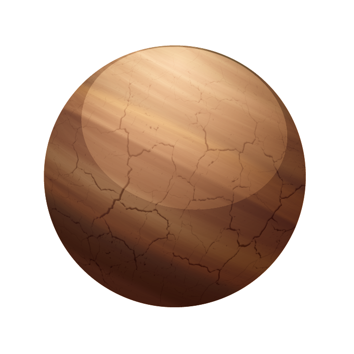
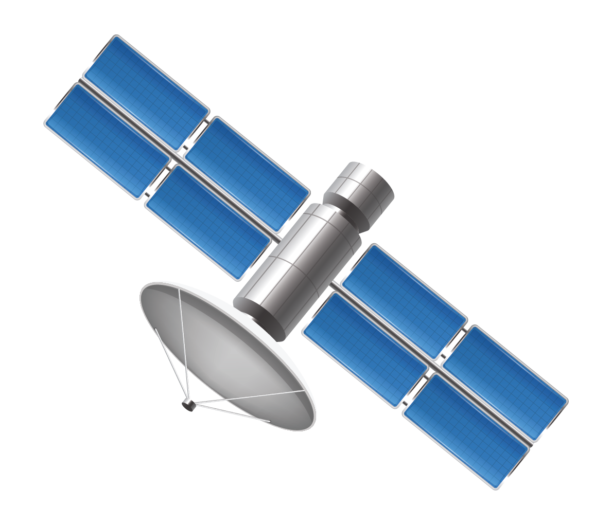
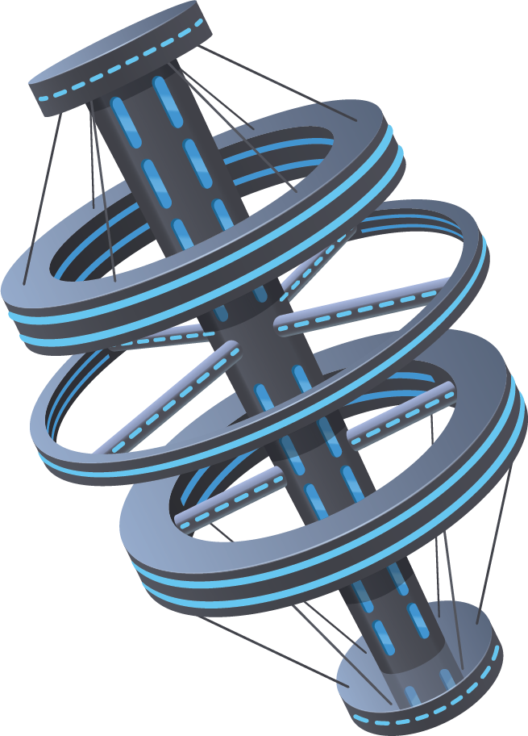
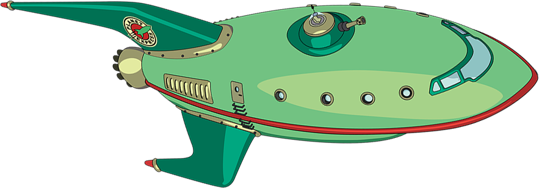

CREW DRAGON
RETURNS FROM SPACE
STATION
RETURNING HUMANSPA
CEFLIGHT TO THE
UNITED STATES
CREW DRAGON DOCKING SIMULATOR
Crew Dragon is designed to autonomously dock and undock with the International Space Station. However, the crew can take manual control of the spacecraft if necessary.
NASA SELECTS LUNAR OPTIMIZED STARSHIP
NASA selected SpaceX to develop a lunar optimized Starship to transport crew between lunar orbit and the surface of the Moon as part of NASA’s Artemis program.